Illustrating trends in nitrogen oxides across the United States using sonification
| Josh L. Laughner | Elliot K. Canfield-Dafilou |
| Department of Chemistry University of California, Berkeley Berkeley CA |
Center for Computer Research in Music and Acoustics Stanford University |
 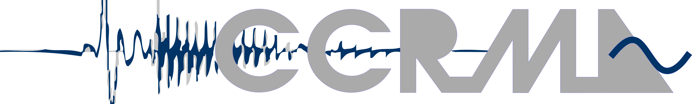
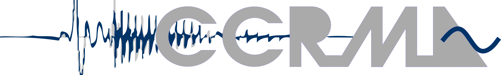

|
|
ICAD
June 22, 2017
Outline
- Motivation
- Methods for Data Capture
- Methods for Data Preparation
- Methods for Sonification (auditory mappings)
- Listening Test Results
- Next Steps
Motivation
- Educational tool to learn about atmospheric chemistry
- Engage with different modes of learning
- Simplify complex processes
- Utilize the human auditory system
which is good at identifying correlations - Facilitate long and short time scale data presentation
Why is NO2 important?
|
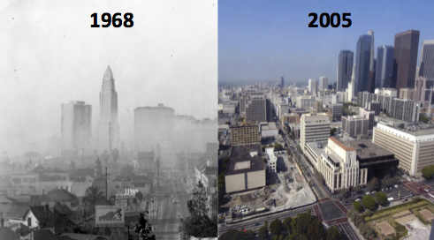 |
- It also produces ozone (O3) which causes respiratory distress and harms plants
 |
The relationship between NO2 and O3
- The relationship between the concentration of NO2 and O3 production is non-linear
Murphy et al., 2007, Atmos. Chem. Phys., doi:10.5194/acp-7-5327-2007
Where does NO2 come from?
| Vehicles |
Power Plants 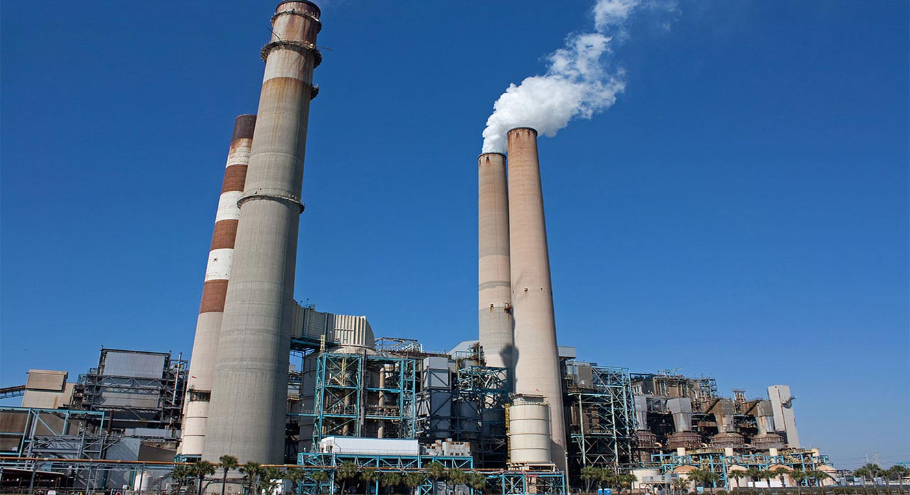 |
| Wildfires 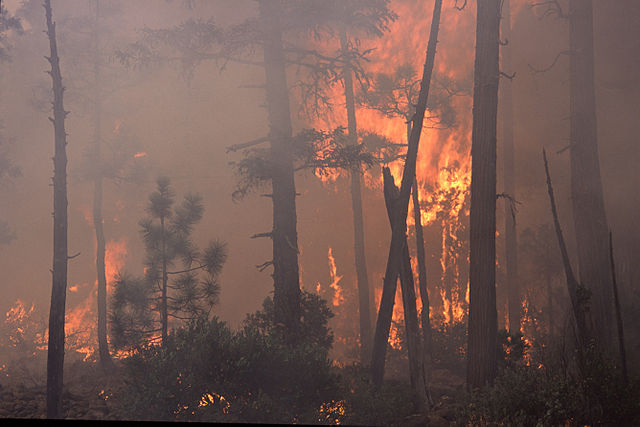 |
Lightning |
How is NO2 measured from space?
|
|
| 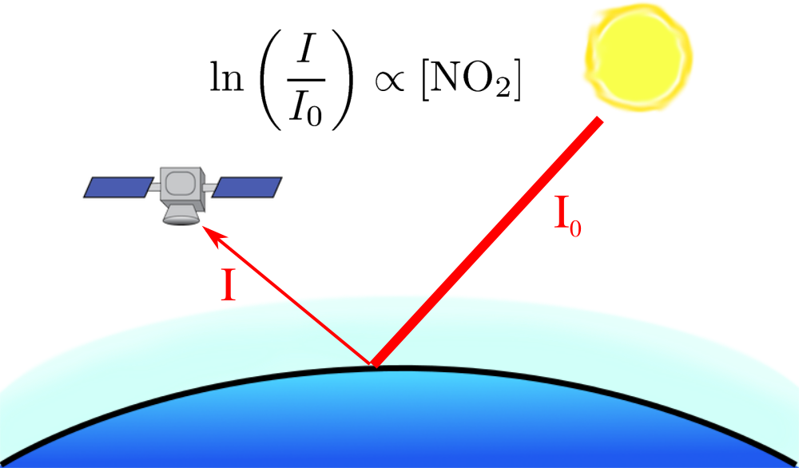 | 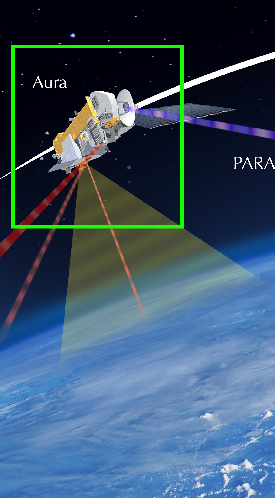 |
BEHR data
Data is freely available at http://behr.cchem.berkeley.edu/
BEHR (Berkeley High-Resolution NO2) data is collected by NASA instruments and processed by the Berkeley Satellite Group at UC Berkeley
Data preprocessing
| One day's observations are incomplete because clouds block our view | Averaging over 1 month gives a complete map |
| 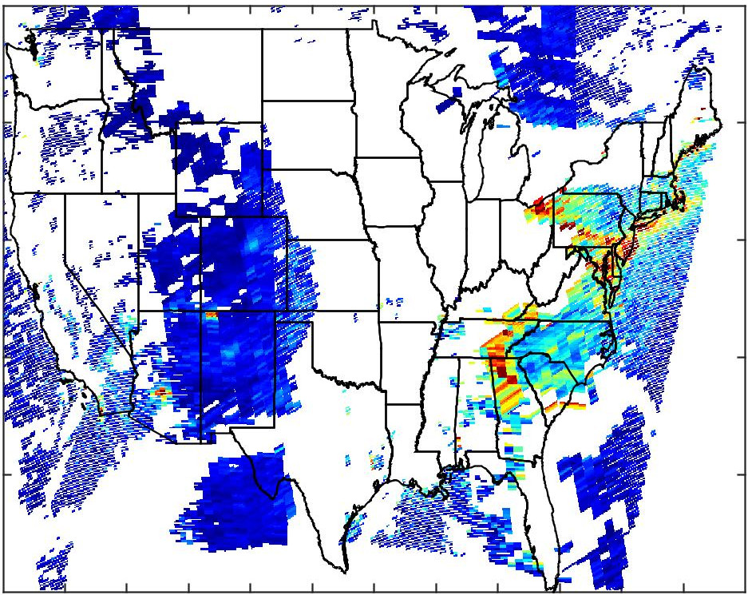 | 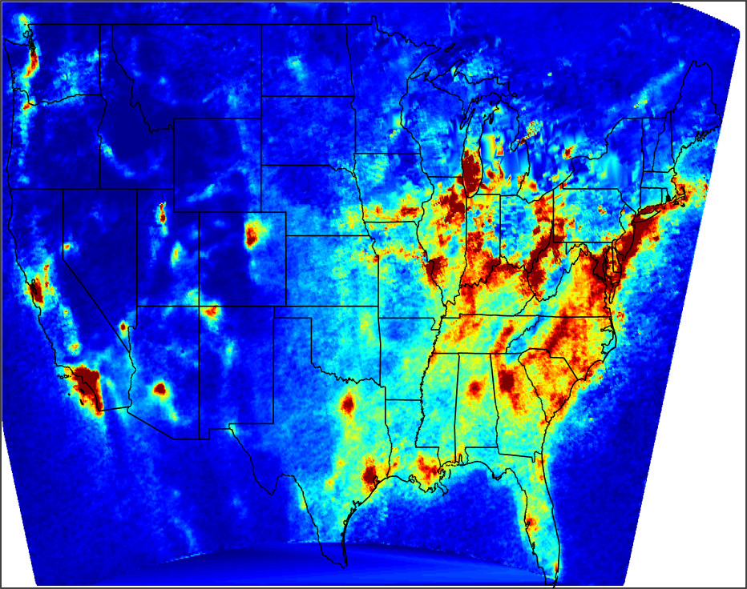 |
Site Selection
Three types of sites were selected
- Urban
- Rural
- Power Plants
Sites selected are distributed across the continental USA
Data preprocessing
| Finally, column densities from each site are averaged within a radius around each site; this is done for each month to generate the trend |
| 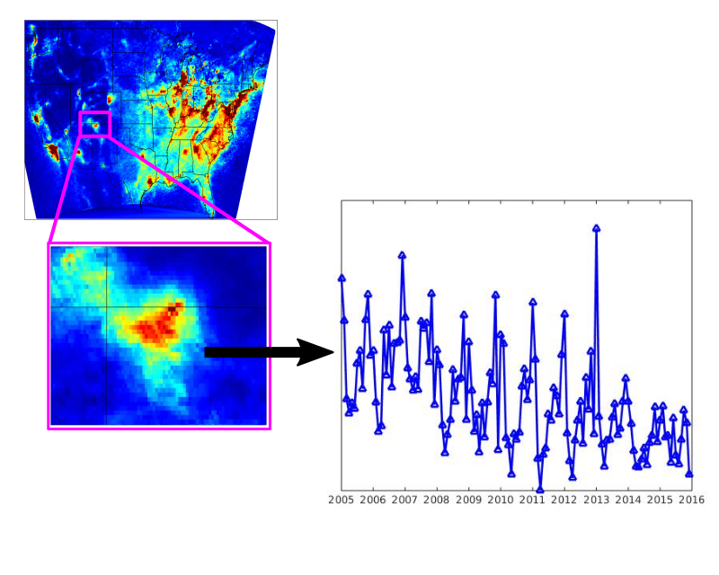 |
Sonification
The main mappings are
NO2 column density and O3 concentration ↔ pitch
We allow three normalization schemes
- relative to site type min/max
- relative to absolute min/max
- relative to individual site min/max
Sonification
Secondary main mappings include:
geographical location ↔ panningseason ↔ resonant low pass filter cutoff
geographical location ↔ panning
site type ↔ synthesis sound
Sonification
We also provide controls for:
- looping
- muting
- turning on/off features
GUI
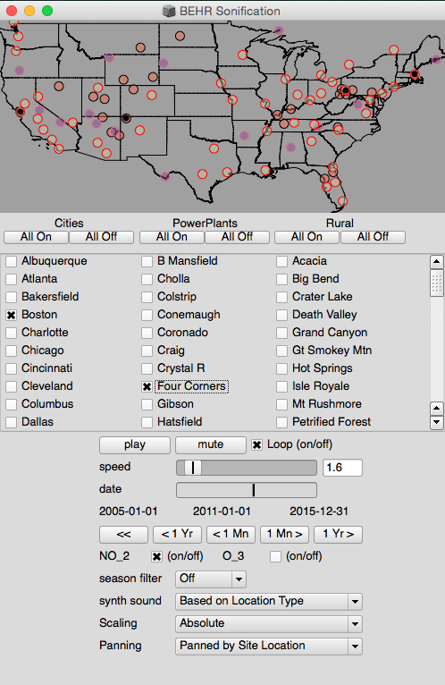Example
Example 2
General observations
- Scaling pitch by global min/max is useful for comparing absolute magnitudes
- Scaling pitch by site min/max makes trends more apparent
- East coast NO2 levels generally higher than west coast*
- Extreme O3 values compress the O3 pitch range
- Season filter cutoff has no instinctive connection to season
Informal test results
| Identify general site trends? | Yes |
| Distinguish magnitude of trends? | Yes |
| Identitfy NO2/O3 correlation? | Tentative yes |
| Identify site type by sound? | Some |
| Identify seasonal differences? | No |
| Distinguish sites from panning? | No |
Moving Forward
- Represent seasonality differently
- Improve panning representation
- Use surface-based O3 measurements
- Include temperature measurements
- Museum installation
Questions?
If you have comments or suggestions, please reach out: jlaughner@berkeley.edu and kermit@ccrma.stanford.edu
BEHR Data: http://behr.cchem.berkeley.edu/
Support: NASA ESSF NNX14AK89H, NASA grants NNX15AE37G and NNX14AH04G, the TEMPO project grant SV3-83019, and NAKFI grant ADSEM10